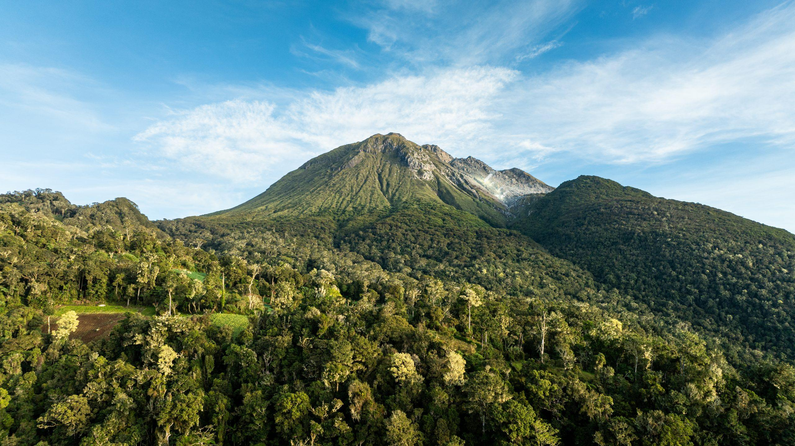
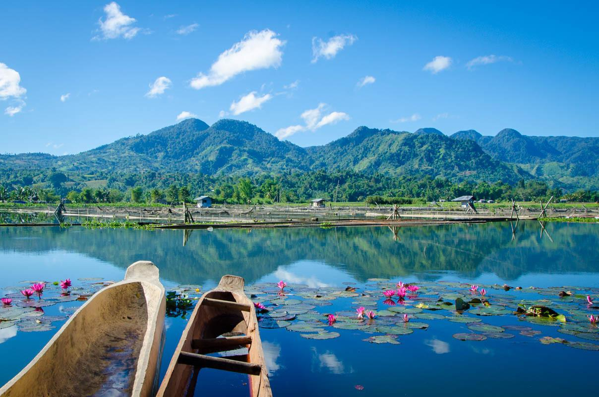
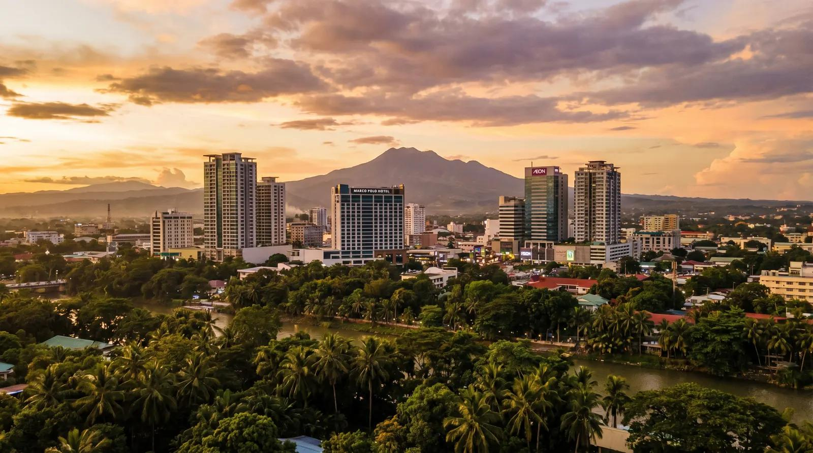

About Mindanao



Mindanao is the second-largest major island group in the Philippines, located in the southern part of the country. It is home to diverse ethnic communities, indigenous traditions, beautiful natural landscapes, and important agricultural industries.
Quick Facts:
- Location: Southern Philippines
- Major regions: Zamboanga Peninsula, Northern Mindanao, Davao Region, SOCCSKSARGEN, Caraga, and BARMM
- Major cities: Davao City, Cagayan de Oro, General Santos, and Zamboanga City
- Languages: Cebuano, Maguindanaon, Maranao, Tausug, and others
- Known for: Mount Apo, durian, tropical fruits, indigenous cultures, and beautiful beaches